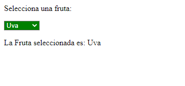

Enunciado
Cree un documento en el que haya una lista desplegable con 4 frutas diferentes. Cuando el usuario seleccione una de ellas, deberá aparecer debajo una frase que diga:
Usted ha seleccionado (la fruta que se haya seleccionado).
Además, esa lista desplegable tendrá un color marrón con letras blancas, cuando pase el puntero del ratón por encima deberá tornarse el color a verde y cuando salga el puntero del ratón, la lista deberá pasar a su estado inicial.
Vea un ejemplo de cómo deberá quedar:
Actividad asociada al CE2.4
Describir los eventos que proporciona el lenguaje de guion: de ratón, de teclado, de enfoque, de formulario y de carga, entre otros, para interactuar con el usuario y relacionarlos con los objetos del lenguaje.
Solución
Selecciona una fruta:
Nota:
En vez de usar los eventos "onmouseover" y "onmouseout" hago el cambio de color con CSS. Se podría hacer en JavaScript de la siguiente manera:
Actividad asociada al CE2.4
El lenguaje de guion JavaScript proporciona una amplia variedad de eventos que permiten interactuar con el usuario. Aquí tienes una descripción de algunos de los eventos más comunes y cómo se relacionan con los objetos del lenguaje:
- Eventos de ratón:
- click: Se dispara cuando se hace clic con el botón izquierdo del ratón. Se relaciona con los elementos del DOM (Document Object Model), y puedes asignar un controlador de eventos para manejarlo.
- mouseover y mouseout: Se disparan cuando el puntero del ratón entra o sale de un elemento. También se relacionan con los elementos del DOM.
- Eventos de teclado:
- keydown, keypress y keyup: Estos eventos se disparan cuando se presiona, mantiene presionada o suelta una tecla en el teclado. Se pueden asociar a elementos del DOM, como campos de entrada (input), y se pueden utilizar para capturar la entrada del usuario y realizar acciones correspondientes.
-
Eventos de enfoque:
- focus y blur: Estos eventos se disparan cuando un elemento recibe o pierde el enfoque. Por ejemplo, cuando un campo de entrada obtiene el foco, se puede usar el evento focus para validar o modificar su contenido.
-
Eventos de formulario:
- submit: Se dispara cuando se envía un formulario. Se utiliza para validar los datos del formulario antes de enviarlos al servidor. Puedes asociar este evento al elemento form del DOM.
- reset: Se dispara cuando se restablecen los valores de un formulario. También se puede asociar al elemento form.
-
Eventos de carga:
- load: Se dispara cuando se carga completamente un objeto, como una página web o una imagen. Se puede utilizar para realizar acciones una vez que todos los elementos se hayan cargado.
- DOMContentLoaded: Se dispara cuando se completa la carga inicial del documento HTML, incluidos los recursos externos como imágenes y hojas de estilo. Se utiliza a menudo para ejecutar código JavaScript después de que el DOM esté listo para ser manipulado.
Estos son solo algunos ejemplos de los eventos que JavaScript proporciona para interactuar con el usuario. Hay muchos otros eventos disponibles, y cada uno se relaciona con objetos específicos del lenguaje, como elementos del DOM, formularios y ventanas del navegador. Los eventos se pueden capturar y manejar utilizando funciones de JavaScript, lo que permite crear interacciones dinámicas y responder a las acciones del usuario de manera personalizada.